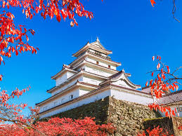
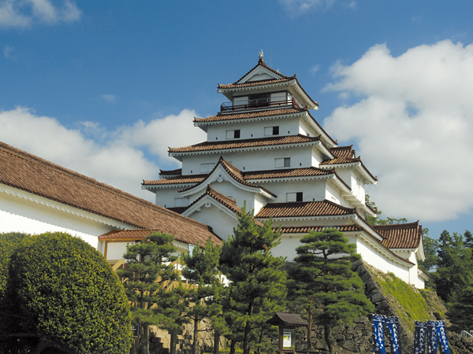
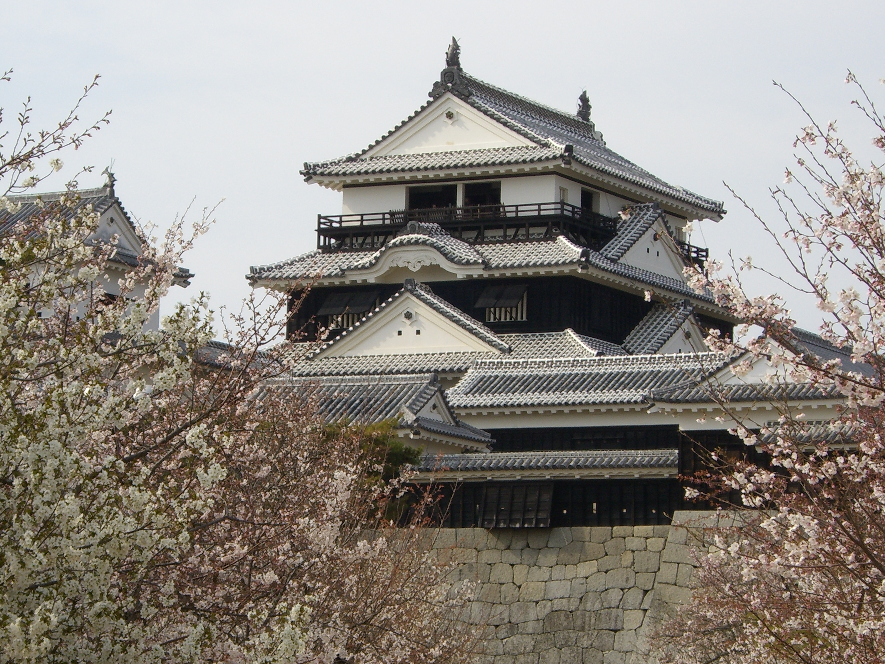

Castillo Tsuruga
Horario de atención: 9:00 AM - 5:00 PM
Contacto: +81-24-123-4567
Transporte: 15 min andando desde la estación Aizu-Wakamatsu.
Castillo Higashiyama
Horario de atención: 10:00 AM - 4:00 PM
Contacto: +81-24-654-3210
Transporte: Servicio de guagua disponible desde la estación de Higashiyama.
Castillo Matsuyama
Horario de atención: 8:30 AM - 5:30 PM
Contacto: +81-89-987-6543
Transporte: Teleférico disponible desde la estación de Matsuyama.